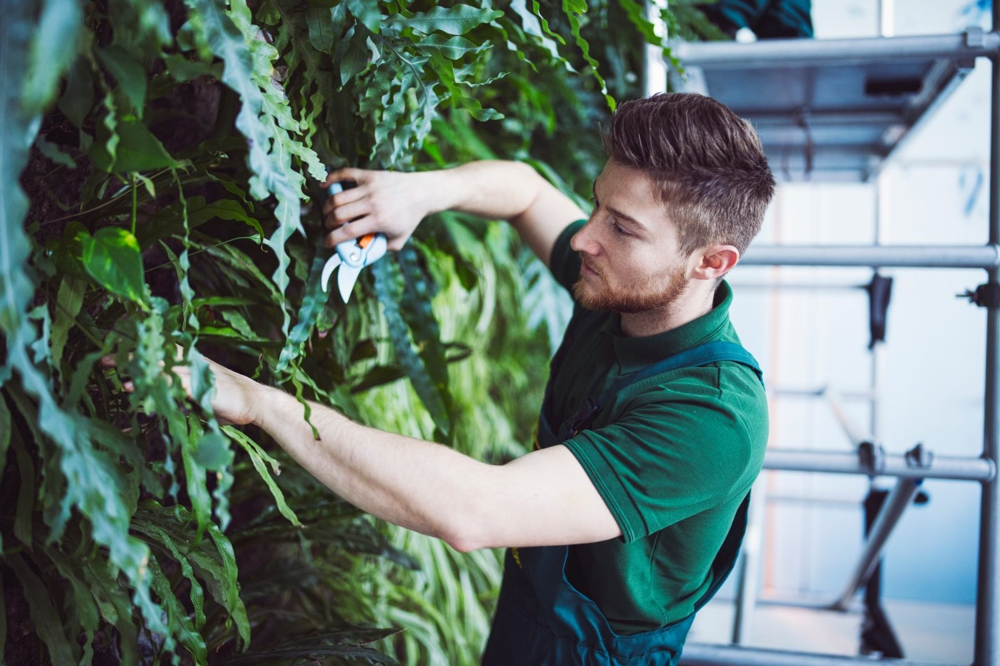

8.089 Auszubildende: Wie Betriebe die nächste Generation gewinnen
Rund sechs Prozent der Beschäftigten im GaLaBau sind Auszubildende. Die Vergütung steigt seit Juli, das Image des Berufs bei jungen Menschen bleibt laut Messe-Trendbarometer eine Hürde. Was Betriebe im Herbst tun können.

8.089 junge Menschen machten 2025 eine Ausbildung im Garten- und Landschaftsbau, so die Branchenstatistik des BGL. Bei 131.746 Beschäftigten entspricht das einer Ausbildungsquote von rund sechs Prozent. Für Betriebe, die in fünf Jahren Vorarbeiter und Bauleiter brauchen, ist das die entscheidende Kennzahl: Wer heute nicht ausbildet, sucht 2031 auf einem noch engeren Markt.
Die Vergütung ist gestiegen
Mit dem Tarifabschluss von IG BAU und BGL steigt die Ausbildungsvergütung: im ersten Lehrjahr um 40 Euro auf 1.140 Euro im Monat, im zweiten und dritten Lehrjahr um jeweils 50 Euro auf 1.270 beziehungsweise 1.390 Euro. Der Ecklohn für ausgelernte Landschaftsgärtner liegt seit dem 1. Juli 2026 bei 20,91 Euro pro Stunde. Für Eltern und Bewerber sind das konkrete Zahlen, die eine Perspektive beschreiben – und die in vielen Ausbildungsanzeigen fehlen.
Das Imageproblem ist real – und lösbar
Das Trendbarometer der GaLaBau 2026 nennt neben der steigenden Komplexität der Projekte ein Imageproblem des Berufs bei jungen Menschen als Ursache des Fachkräftemangels. Die Messe setzt mit dem Landschaftsgärtner-Cup dagegen, in dem der Nachwuchs sein Können zeigt. Für den einzelnen Betrieb entscheidet sich das Image aber nicht in Nürnberg, sondern vor Ort: in der Berufsschule, im Praktikum, im Gespräch mit den Eltern.
Drei Hebel für den Herbst
- Praktikum anbieten – jetzt. Herbst- und Winterferien sind die Zeit, in der Jugendliche einen Betrieb kennenlernen. Ein Praktikant, der im Januar bei Ihnen war, unterschreibt im März. Zwei Wochen mit einem festen Ansprechpartner wirken mehr als jede Anzeige.
- Die Ausbildungsstelle sichtbar machen. In der Berufsschule, auf Berufsmessen – und online dort, wo junge Leute wirklich suchen. Eine Ausbildungsstelle, die nur auf der eigenen Website steht, findet niemand, der den Betrieb noch nicht kennt.
- Die Eltern mitdenken. Perspektive, Verdienst, Sicherheit: Das sind die Argumente, die Eltern hören wollen. Nennen Sie den Tarif, die Meisterförderung und die Übernahmequote im Gespräch – und zeigen Sie, was Ihre Azubis nach drei Jahren gebaut haben.
Ausbildung als Teil der Mitarbeitergewinnung
Ausbildung und Fachkräftesuche werden in vielen Betrieben getrennt gedacht. Sinnvoller ist ein Plan: Welche Positionen brauche ich 2027, welche 2030? Für die kurzfristige Lücke helfen erfahrene Fachkräfte aus dem Umkreis – wie viele davon in Ihrer Region registriert sind, zeigt der Standort-Check. Für die langfristige Lücke gibt es nur einen Weg: selbst ausbilden.
Quellen
- BGL: Branchenstatistik 2025, Pressemitteilung vom 27. Februar 2026, presseportal.de.
- IG BAU: Garten- und Landschaftsbau – Tarifabschluss, igbau.de; B_I galabau: Tariferhöhung 2026 – mehr Lohn im GaLaBau ab 1. Juli, bau.bi.
- Messe Nürnberg: Trendbarometer der GaLaBau 2026, Pressemitteilung Januar 2026, galabau-messe.com.
Wie finden Betriebe 2026 Mitarbeiter?
Zwölf Fragen, drei Minuten. Ergebnisse im Oktober, kostenlos für alle Teilnehmer.
Jetzt teilnehmen →Wie viele Fachkräfte wohnen in Ihrem Umkreis?
PLZ eingeben, Potenzial sehen. Kostenlos, Ergebnis sofort.
Standort prüfen →